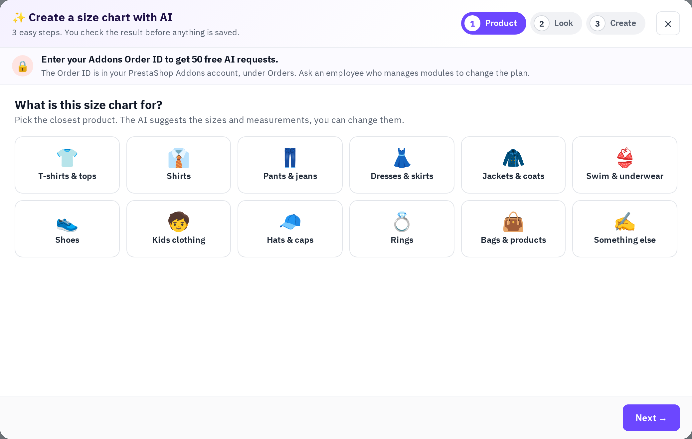

Click Create with AI above the size chart list. Three steps, and one AI request:
- What is this size chart for? Pick the closest product (T-shirts & tops, shirts, pants & jeans, dresses & skirts, shoes, rings, hats & caps, kids clothing, bags & products and more) and who it is for. The AI suggests the sizes and measurements; you can change them, choose the units (cm, inch or a cm + inch switch), and use the real sizes of selected products. Optional: Copy from a picture — upload a photo or screenshot of a size chart and the AI copies its sizes.
- Pick a look: one of the colour themes for the table, tabs and Size Guide button (you can change every colour later).
- Name it and create: the chart name, where it shows (all products, or chosen categories, brands …) and how shoppers open it (button + popup, or on the product page). Add notes for the AI if you like, e.g. a YouTube link for a how-to-measure video.
The AI needs about 20 to 60 seconds. You then see the chart as shoppers will see it, on desktop, tablet or phone; Open in editor loads it into the designer, where you change anything and click Save.
